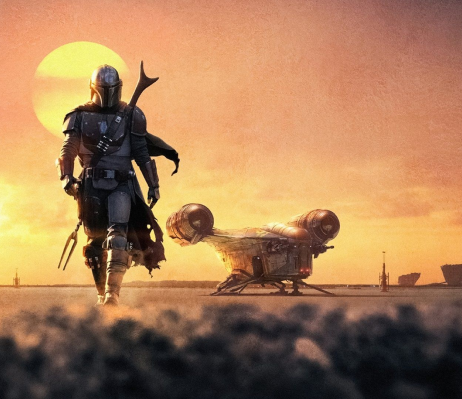

Quem são os Mandalorianos
Os mandalorianos são um povo guerreiro da galáxia de Star Wars, conhecido por suas habilidades em batalha e sua cultura de honra. Eles são reconhecidos por seus icônicos capacetes e armaduras de Beskar, um metal extremamente resistente, que são altamente personalizáveis e simbolizam sua identidade cultural.

Qual sua Historia
A história dos mandalorianos é complexa e variada. Em geral, os mandalorianos são originários do planeta Mandalore e foram originalmente concebidos como uma raça de guerreiros e caçadores de recompensas que se espalharam pela galáxia. Ao longo dos anos, os mandalorianos tiveram diferentes líderes e facções políticas, incluindo o governo neutro de Mandalore, liderado por Duquesa Satine Kryze, e o Império Mandaloriano, liderado por Mand'alor, o Conquistador.
